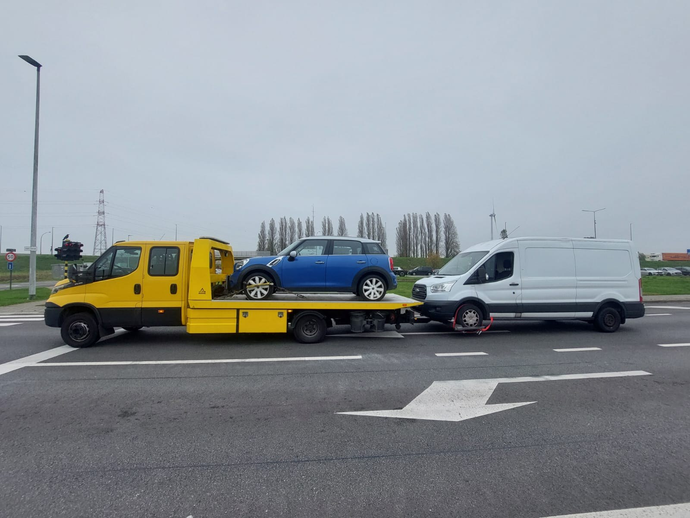
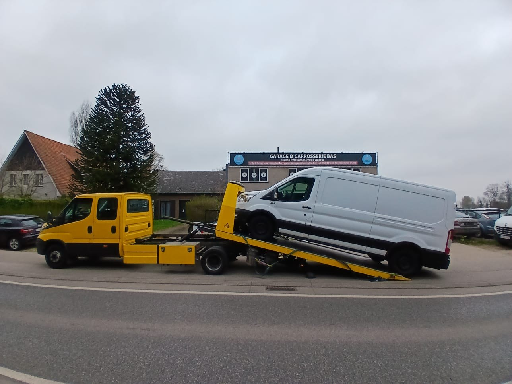
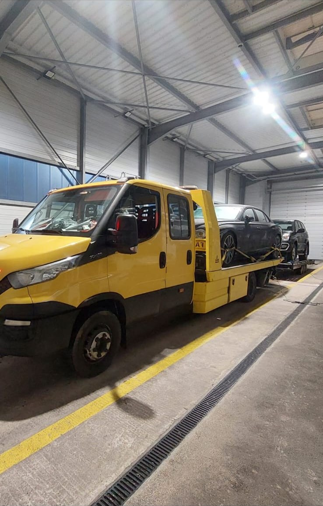

Pechverhelping
Startproblemen, lege accu, lekke band en andere situaties waarbij je eerst weer mobiel probeert te worden.
Pech, ongeval of transport nodig? Faster helpt vanuit Antwerpen met pechverhelping, takelen, berging en voertuigtransport. Je krijgt een duidelijke aanpak en één aanspreekpunt.

Stuur via WhatsApp kort waar je staat, welk voertuig je hebt en wat er gebeurd is. Foto's van de situatie zijn ook handig.
Stuur WhatsAppDit is het vaste Faster-nummer. Bel wanneer je liever meteen mondeling uitlegt wat er aan de hand is.
Bel Faster — +32 3 375 67 37Faster vertrekt vanuit Antwerpen en helpt afhankelijk van de planning in de stad en regio.
Antwerpen-Centrum, Kiel, Berchem, Borgerhout, Deurne, Merksem, Wilrijk, Hoboken en andere wijken en districten.
Ook buiten de stad kan transport of takeling worden geregeld, onder meer richting Edegem, Wommelgem, Mortsel, Kontich en Aartselaar. Voor verder vervoer kijken we naar bestemming, voertuig en beschikbare capaciteit.
Wanneer pech ter plaatse kan worden opgelost, hoeft het voertuig niet altijd mee. Als takelen nodig is, regelen we veilig transport.
Startproblemen, lege accu, lekke band en andere situaties waarbij je eerst weer mobiel probeert te worden.
Wanneer doorrijden niet meer kan, brengen we het voertuig naar de afgesproken bestemming.
Van pechlocatie naar garage, thuisadres, haven, koper of verkoper.
Ook lichte bedrijfswagens en grotere voertuigen vragen een andere laad- en transportaanpak.
Transport voor zwaar of afwijkend materieel wanneer het voertuig niet als gewone personenwagen kan worden behandeld.
Voertuigtransport buiten Antwerpen en België, afhankelijk van bestemming, voertuig en planning.
Niet elke pechsituatie is hetzelfde. Vertel gewoon wat je merkt, dan bekijken we samen wat er nodig is.
Rijden met een lekke band is niet altijd mogelijk of veilig. Vaak is het voordeliger om het voertuig rechtstreeks naar een bandencentrale te brengen in plaats van een uitgebreide interventie ter plaatse.
Een voertuig dat niet start hoeft niet meteen naar de garage. Waar het veilig en technisch mogelijk is, proberen we eerst te starten met een booster.
Verkeerde brandstof getankt? Rijd niet zomaar verder. Afhankelijk van de situatie schakelen we een technieker in of vervoeren we het voertuig naar een garage.
Werd je voertuig administratief getakeld wegens foutparkeren? Dat verloopt via een andere procedure dan een pechinterventie. Ga eerst na welke dienst de takeling deed en waar het voertuig staat. Voor een gewone pechsituatie of ongeval kun je ons rechtstreeks bellen.
Een wagen die midden op de weg staat heeft voorrang. Staat je voertuig al veilig geparkeerd en moet het pas later vervoerd worden, dan bekijken we samen welk moment praktisch is. Past dat toevallig bij een rit die we toch al maken, dan kan dat een gunstiger prijs opleveren.
De prijs hangt af van locatie, bestemming, type voertuig en dringendheid. Daarom geven we liever geen willekeurig vast bedrag. Bel of WhatsApp ons met die gegevens en we spreken vooraf een duidelijke prijs af.
Kun je veilig naar een veilige plaats achter de vangrail? Doe dat. Zet indien mogelijk je vier pinkers aan en gebruik de nodige signalisatie zonder jezelf in gevaar te brengen.
Vertel wat je ziet en waar je staat. Van daaruit bepalen we wat er praktisch nodig is.


Praktische antwoorden voor wanneer je pech hebt of een voertuig moet laten vervoeren.
Stuur Faster een bericht of bel het vaste nummer.